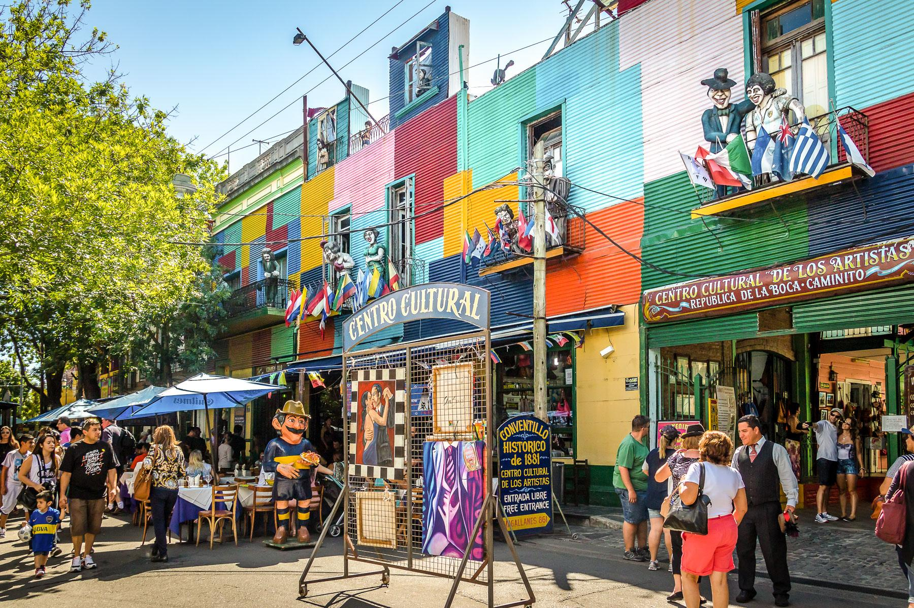
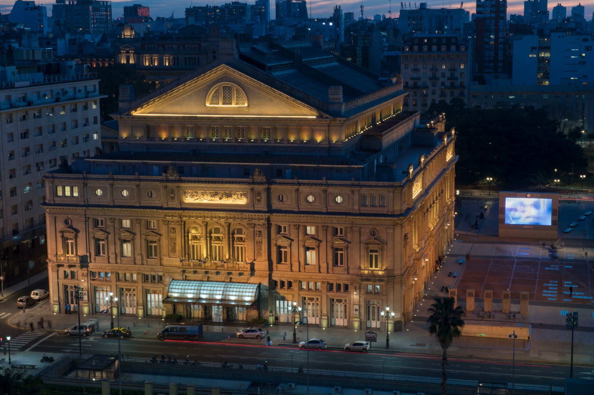
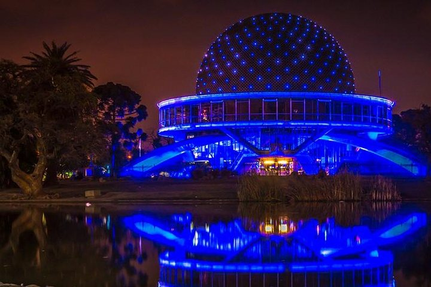

Descubrí Buenos Aires
Historia, cultura, arquitectura y experiencias únicas en una de las ciudades más importantes de Sudamérica.
Explorar destinosBienvenidos a Buenos Aires
Buenos Aires es la capital de Argentina y una de las ciudades más importantes de Sudamérica. Se caracteriza por su diversidad cultural, su arquitectura, sus espacios verdes y su intensa vida artística y gastronómica.
Desde sus barrios históricos hasta sus modernos paseos, la ciudad ofrece una gran variedad de lugares y experiencias para descubrir.
Destinos destacados
Conocé algunos de los lugares más representativos de la ciudad.


Puerto Madero
Un barrio moderno que combina arquitectura, gastronomía y paseos junto al río.
Conocer más
Una ciudad llena de cultura
La identidad cultural argentina es un mosaico de influencias indígenas, europeas y contemporáneas.
Las comunidades originarias, la colonización española y la inmigración europea contribuyeron a formar la diversidad cultural del país.
Descubrir nuestra culturaExperiencias para disfrutar
Gastronomía
Descubrí los sabores argentinos, desde el asado hasta las tradicionales empanadas.
Ver gastronomíaActividades culturales
Disfrutá del tango, los teatros, los museos y los festivales de la ciudad.
Ver actividadesNaturaleza
Explorá parques, jardines y espacios verdes para disfrutar al aire libre.
Explorar naturaleza